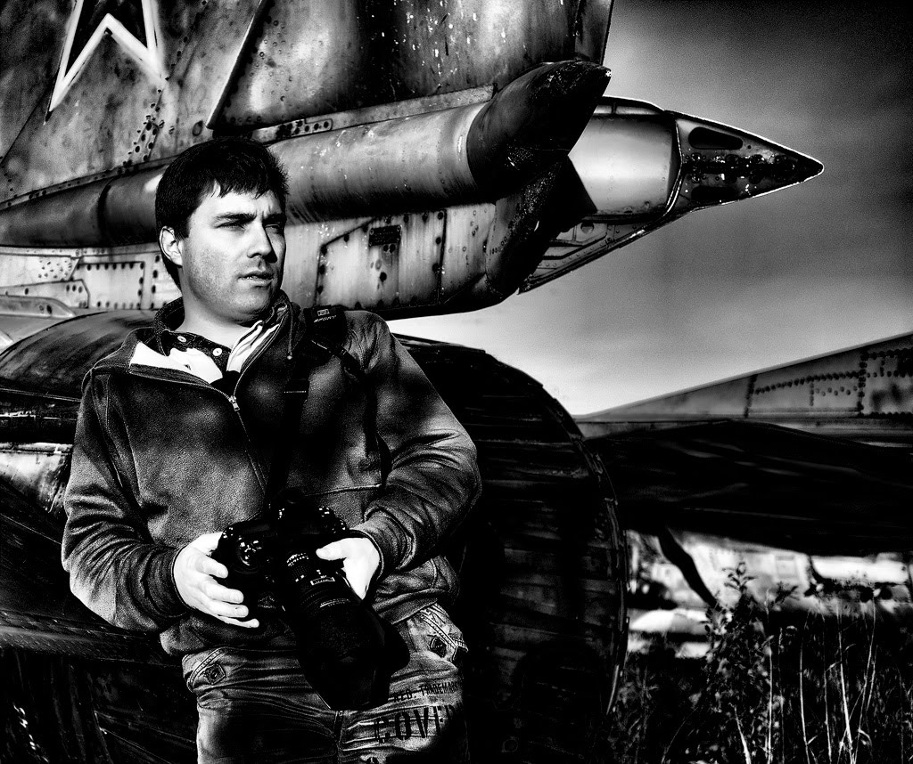

Фотография
Начнем с того, что сейчас фотография, к сожалению, стала цениться меньше, чем раньше, потому что стала доступнее. Практически каждый человек, может позволить себе телефон с камерой и делать фотографии. Они могут быть мало похожи на искусство, но это память и видение человека.
Cам термин появился в 1839 г.
Если мы говорим о фотографии как об искусстве, то определение может звучать так:
- Фотография - это разновидность изобразительного искусства, творческий процесс поиска и создания художественно-привлекательной композиции, в виде изображения (снимка), которая в большей степени определяется видением самого фотографа, создается с помощью особых технических средств (фотокамеры).
- Фотография - это момент жизни, который мы решили остановить и оставить себе на память в виде фотоснимка.
По определению из Википедии фотография это:
Термин «фотография» ( фр. photographie от др.-греч. φῶς (род. п. φωτός ) «свет» и γράφω «пишу»; светопись — техника рисования светом)
Фотогра́фия — технология записи изображения путём регистрации оптических излучений с помощью светочувствительного фотоматериала или полупроводникового преобразователя.
В отличие от некоторых других языков, в русском, слово «фотография» используется только применительно к неподвижным изображениям.
Фотографиями также называются конечные отпечатки фотографического изображения, изготовленные на фотобумаге химическим способом или принтером.